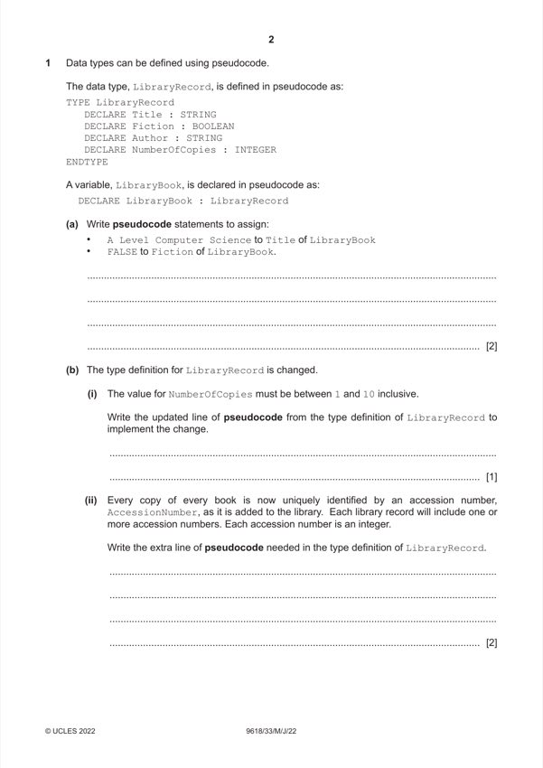

Question 1

Original paper page 2
Part 1(a) — solution
LibraryBook.Title "A Level Computer Science" 2
LibraryBook.Fiction FALSE
Mark points
- Include the ideas shown in the solution above.
Part 1(b)(i) — solution
DECLARE NumberOfCopies : 1 .. 10 1
Mark points
- Include the ideas shown in the solution above.
Part 1(b)(ii) — solution
DECLARE AccessionNumber : ARRAY[1:NumberOfCopies] OF INTEGER 2
Mark points
- Include the ideas shown in the solution above.
Part 1(c) — solution
- A data type constructed by a programmer // not a primitive data type
- A data type that references at least one other data type…
- … the data types can be primitive, or user defined
- Class / object / set
Mark points
- A data type constructed by a programmer // not a primitive data type
- A data type that references at least one other data type…
- … the data types can be primitive, or user defined
- Class / object / set